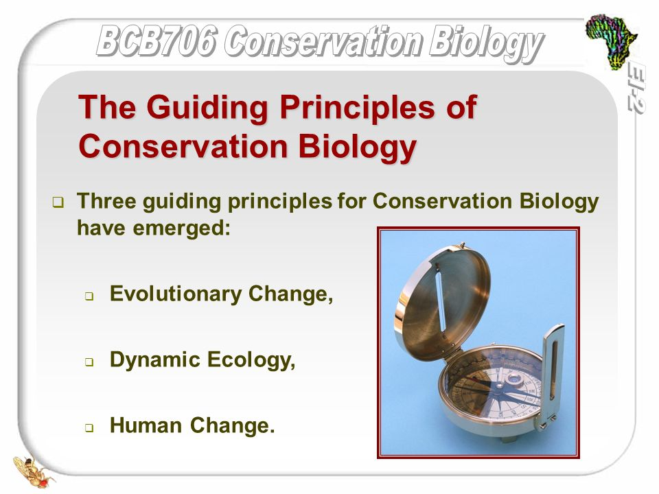
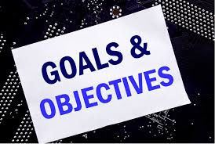
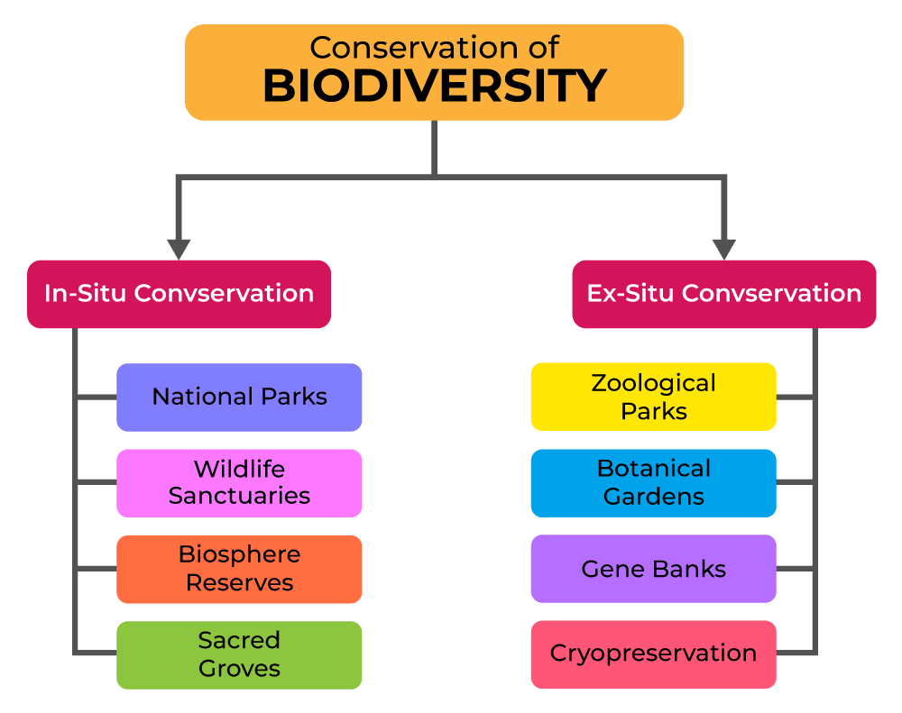

Definition

- Conservation Biology is a multidisciplinary scientific field dedicated to understanding and preserving biodiversity, managing ecosystems, and protecting natural habitats from human-induced impacts.
Core Principles of Conservation Biology

- Biodiversity and Ecosystem Value: Conservation biology emphasizes that biodiversity has intrinsic value, meaning species and ecosystems are valuable in themselves.
- Ecological Interdependence: The field recognizes the interconnectedness of species and ecosystems, where the removal of one species can have cascading effects on other parts of the ecosystem.
Goals and Objectives

- Protecting Species from Extinction: By identifying endangered and vulnerable species, conservation biologists prioritize measures to prevent extinction, often by creating protected areas or captive breeding programs.
- Preserving Genetic Diversity:Maintaining genetic diversity within populations is crucial for species adaptation to environmental changes, disease resistance, and overall ecosystem stability.
Methods and Approaches in Conservation Biology

- Field Studies and Monitoring: Biologists monitor species populations, genetic diversity, and ecosystem health. Techniques include population surveys and genetic analysis to gather data.
- Protected Areas and Reserves:Creating protected areas like national parks, wildlife sanctuaries, and marine reserves is one of the most effective conservation strategies.